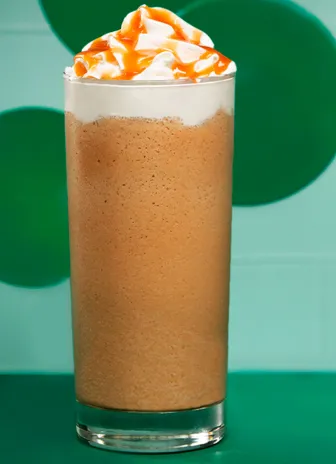

Recipe
Toasted Marshmallow Café Au Lait
 4 mins
4 mins
More about the recipe
Long summer days mean more time for warm and toasty marshmallow-topped coffee.
What you'll need
| - 1 | Starbucks Taosted Graham Flavored Coffee K-Cup |
| - 2 | Tbsp chocolate syrup |
| - 1/4 | cup 2% milk |
| - 2 | marshmallows |
| - | Graham cracker crumbs to taste |
1 serving

How to make
Toasted Marshmallow Café Au Lait
-
Step 01
Brew one K-Cup pod of Starbucks Toasted Graham Flavored Coffee.
-
Step 02
Stir chocolate into hot coffee.
-
Step 03
In a separate container, froth 2% milk using your preferred method. You can use a hendheld milk frother or froth your milk by hand. Read our frothing guide here.
-
Step 04
Pour frothed milk into your mug.
-

-
Step 05
Top with 2 marshmallows and sprinkle of graham cracker crumbs. For s'more summer flavor, toast your marshmallows over a bonfire.
Serve and Enjoy
Toasted Marshmallow Café Au Lait
Sip, savor and enjoy
LikeRecommended coffee
Starbucks Toasted Graham Naturally Flavored Coffee
Warm up with a cozy mug full of sweet toasted graham with this flavored coffee.
Discover
More deliciousness
Other Recipes to Enjoy
-
Vanilla Sweet Cold Foam
Iced Beverages
2 mins
-
Caramel Frozen Blended Coffee
Iced Beverages
8-10 mins -
Iced Brown Sugar Oatmilk Shaken Espresso
Iced Beverages
5 mins